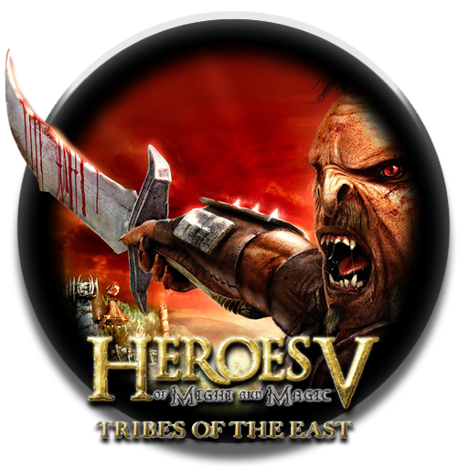
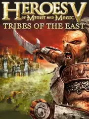

Heroes of Might and Magic V: Tribes of the East |
|
| Tiempo de juego | No Jugado |
| Última actividad | Nunca |
| Añadido | 17/11/2025 18:00:39 |
| Modificado | 17/11/2025 18:04:44 |
| Estado de finalización | Not Played |
| Librería | Playnite |
| Fuente | |
| Plataforma | PC (Windows) |
| Fecha de lanzamiento | 11/10/2007 |
| Puntuación de la Comunidad | 81 |
| Puntuación de la Crítica | 60 |
| Puntuación de usuario | |
| Género | Role-playing (RPG) Strategy Turn-based strategy (TBS) |
| Desarrollador | Nival Interactive |
| Editor | |
| Característica | Multiplayer Single Player |
| Enlaces | Steam |
| Tag | |
Esto no es una simple expansión. Esto es Tribes of the East. El capítulo final. La versión definitiva de Heroes V. Y fue tan zarpado que ¡era STANDALONE! (No necesitabas el juego base).
¿La gran estrella? ¡La facción que todos pedían a gritos! ¡LOS ORCOS! La facción Stronghold.
¡Acá es donde el juego explotó! Tribes of the East introdujo las MEJORAS ALTERNATIVAS para TODAS las facciones.
¡Se terminó la mejora única! Ahora, cada bicho (Tier 1 a 7) tenía DOS opciones de mejora. ¿Querés que tus Esqueletos sean con arco (Esqueleto Arquero) o con escudo (Esqueleto Guerrero)? ¿Querés que tu Grifo se cure (Grifo Imperial) o que sea más de ataque (Grifo de Batalla)?
¡Esto multiplicó la estrategia por MIL! ¡Podías armar ejércitos completamente distintos usando la misma facción!
Con una campaña épica que cierra toda la historia y la mejor mecánica nueva de la saga, Tribes of the East es, para muchos, el mejor Heroes V que existe.